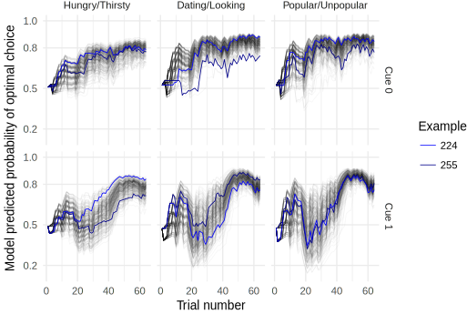
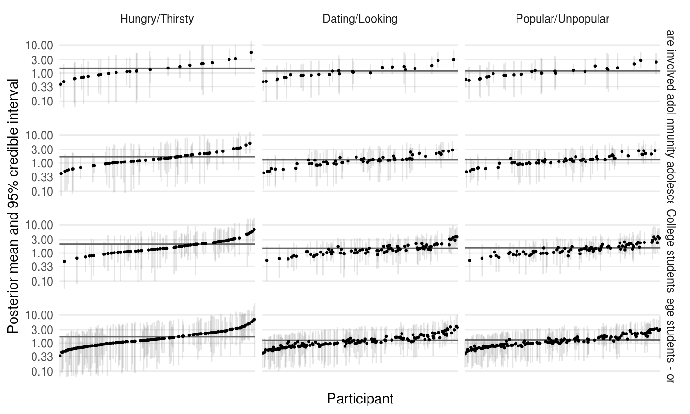

- Romantic and sexual interests develop (W. A. Collins et al., 2009)
- Spend less time with family, more time alone or with peers (Larson & Richards, 1991)
- Give status more priority (LaFontana & Cillessen, 2010)
8/6/2018
Background: Adolescence is a preiod of social reorientation
Two faces of social reorientation: risk
- Sexual behavior during adolescence itself as health risk
- Youth Risk Behavior Survey considers ever having had sex as a risk-factor to be reduced (CDC, 2018)
- Romantic relationships can be a source of emotional distress (W. A. Collins et al, 2009)
- Minor delinquency, substance use may be an antecedent & consequence of popularity (Allen et al., 2005; de Bruyn & Weisfeld, 2017)
Two faces of social reorientation: Benefit
- Evolutionary psychology perspective
- Development of motivations evolved in response to fitness challenges (Ellis et al., 2012; Schaller et al., 2017)
- Finding mates, and gaining status
- Satisfaction of these motives might support well-being
- Being in a relationship associated with higher self-worth (W. A. Collins et al, 2009)
- Controlling for genetic confounds, sexual activity in romantic relationships is related to less delinquency (Harden & Mendle, 2011)
- Popularity also prospectively associated with decreases in overt hostility (Allen et al., 2005)
- Adolescent social status associated with adult income (Shi & Moody, 2017)
Mechanisms of social reorientation
- Neurodevelopmental changes in perceptual, motivational, and executive control brain regions change the way you experience the environment (Nelson et al., 2016)
- May highlight developmentally-relevant opportunities in the environment
- Directly altering stimulus salience
- Shifting associations via changes in what someone finds rewarding
Goal: Measuring social motives in the lab
- Create behavioral task using the effect of salience on learning
- Attentional theories of learning posit that
- Salience of a stimulus affects learning
- Past predictive value of a stimulus can alter its salience (Kruschke, 2011; Mackintosh, 1975)
- Information relevant to social motivations should be more salient and so should be learned more quickly
- As an individual develops through adolescence, this should become more pronounced.
The Social Probabilistic Learning Task (SPLT)

- People learn an association between each of 6 faces and one of 2 words
- Hungry/Thirsty
Dating/Looking
Popular/Unpopular - Each trial
- presented with a face with 2 potential descriptors
- press \(\leftarrow\) or \(\rightarrow\) keys to select which descriptor matches that face
- receive feedback of 0, 1, 5 points
- The first time is a wild guess, but people learn over time
- 20% of the time, people get misleading feedback
- 8 blocks x 8 trials x 6 faces = 384 trials
Aims
- Does this "motivational framing" enhance learning?
- Will people learn the social descriptors better?
- Does motive-related learning enhancement covary with development as we would expect?
- Will this effect be stronger in older participants?
- Does learning enhancement relate to self-report motives?
- Will this effect be stronger for those that report stronger social motives?
334 Participants
Adolescents drawn from ongoing longitudinal study (TDS)
College students from SONA
| Sample | N | Male | Female | Age Male | Female |
|---|---|---|---|---|---|
| Community adolescents | 65 | 29 | 36 | 15.5 (1.5) | 15.6 (1.7) |
| Foster-care adolescents | 39 | 19 | 20 | 15.6 (1.5) | 17.0 (1.7) |
| College Students | 85 | 33 | 52 | 20.9 (4.2) | 19.3 (1.3) |
| College Students Online | 141 | 37 | 104 | 19.8 (1.4) | 19.3 (1.2) |
- \(N=13\) foster-care adolescents don't have task data
- 313 participants provided task data (334 - 21 missing)
Participants Pubertal Development

Approaches to describing task behavior
- Use raw behavior directly: Average number of optimal decisions during last 1/2 of the run.
- H1: More optimal decisions in motive-conditions
- H2: Size of difference will be bigger in more developed participants
- H3: Size of difference will +correlate with self-report motives
- Bayesian modeling: Rescorla-Wagner instrumental learning model
- Examine model parameter differences between conditions
- Explore individual differences
Aim 1: Does motive-framing enhance learning?
Raw behavior

D/L
t(185) = 2.69,
D = .029
p = .008
P/U
t(185) = 4.54,
D = .047
p = .00001
How the reinforcement learning model works
- Describes the probability of pressing \(\rightarrow\) on each trial
- This probability is determined by an action weight
- Action weight is a function of 4 parameters:
- Right-bias \(b\) - Some people might just be prone to (not) pressing \(\rightarrow\)
- "Noise" \(\xi\) - Random responding (attention, hurrying, lower ability)
- Reward-value \(\rho\) - Determines how rewarding the points are
- Learning-rate \(\epsilon\) - Determines the how influential any given trial is
- Bayesian analysis to estimate the model and interpret parameter posterior densities
Right-bias differences

3: Popular/Unpopular; 2: Dating/Looking; 1: Hungry/Thirsty
Irriducible noise differences

3: Popular/Unpopular; 2: Dating/Looking; 1: Hungry/Thirsty
Reward sensitivity differences

3: Popular/Unpopular; 2: Dating/Looking; 1: Hungry/Thirsty
Learning rate differences

3: Popular/Unpopular; 2: Dating/Looking; 1: Hungry/Thirsty
Aim 1 Summary: Motive effects on learning
- Overall better learning in motive conditions
- Possibly due to higher learning rate, lower noise
Aim 2: Correlations with development
Does motive-related learning enhancement covary with development as we would expect?
Indices of development:
- Age
- Pubertal Development Scale (Petersen et al., 1988)
Optimal choice performance and age

Optimal choice performance and puberty
Model parameters and age
Model parameters and puberty
Aim 2 Summary: Motive effects and development
- More developed participants perform better in general…
- …likely due to less random responding (\(\xi\)).
- Motive related learning enhancement does not appear to covary with development as we would expect.
- Older participants do not appear to learn better in social motive conditions.
Aim 3: Correlations with self-report motives
Does learning enhancement relate to self-report motives?
Measures related to social motives (College samples only)
- Fundamental Social Motives Inventory (FSMI; Neel et al., 2015)
- Dominance & Prestige Strategies (D&P; Cheng et al., 2013)
Measures related to social motives (All samples)
- Kids' Social Reward Questionnaire (K-SRQ; Foulkes et al., 2014)
- Urgency and Sensation-Seeking (UPPS-P; Whiteside et al., 2005)
nb: all analyses done using latent variable measurement models
College samples

All samples

Aim 3 Summary: Motive effects and self-report motives
- No significant correlations with convergent measures
- Absolute magnitude of all correlations < .2 (many significantly)
- Learning enhancement does not relate to self-report motives
General conclusions
- Overall better learning and higher learning rate in social motive conditions.
- This social motive learning enhancement does not appear to covary with development.
- Social motive learning enhancement does not relate to self-report of motives.
Possible explantions
- Mate-seeking and status motives don't develop during adolescence
- Self-report measures don't measure motives
- Social motives don't affect stimulus salience and so don't affect learning
- Task behavior is an imprecise measure of individual differences in social motives
- Task learning is irrelevant to actual social goals (e.g., popularity of computer-generated face is not instrumentally valuable for satisfying a status motive).
- Binary choice outcomes are less reliable indicators of latent constructs
- The choice of these particular descriptors may be problematic in some way
Basic reinforcement learning finding
Adults, or young adults, perform better than adolescents or children
- This is consistent with most of the literature1, and is the largest cross-sectional sample to date
- Some authors propose that adolescents should perform better than adults due to their heightened reward sensitivity
- Scant evidence in the literature (Davidow et al., 2016)
- My data shows no evidence of adolescent-specific benefit
- No evidence of adolescent-specific-reward sensitivity (e.g., \(\rho\))
1 Bos et al., 2009; Christakou et al., 2013; Cohen et al., 2010; Decker et al., 2015; Duijvenvoorde et al., 2008; McCormick & Telzer, 2017; Palminteri et al., 2016; Peters & Crone, 2017; Rosenblau et al., 2017
Future directions
- Account for working memory in learning task (A. G. E. Collins et al., 2017)
- Expand lexical space
- Other behavioral paradigms may provide more fine-grained information
- Continuous-value economic games
- "Information exploration" games
- Focus on means
Thanks to…
My committee:
Chair: Jennifer Pfeifer
Co-Chair: Sanjay Srivastava
Member: Elliot Berkman
Outside Member: Nicole Giuliani
Kate Mills
All 334 participants
TDS Study Coordinators: Maureen Durnin, Garrett Ross
Research assistants: Emily Talbot, Marina Parker, Hannah Fraser, Cameron Hansen
The DSN and PSD Labs
Melanie Berry
Summary of conclusions
- Learning is affected by "motive" framing
- Individual differences don't behave as expected
- Behavior/development correlations are consistent with previous literature
More slides? You shouldn't have!
Individual-level parameter correlations

Individual-level parameter and behavior
Individual-level parameter confidence

Epsilon chains

Rho chains
Xi chains

b chains

Model predictions through identical runs

Model predicted versus observed proportions

Learning enhancement with Age

\(\beta_{\text{adolescent}} = .08;\beta_{\text{college}} = .01\)
Learning enhancement with Puberty

\(\beta_{\text{adolescent}} = .03; \beta_{\text{college}} = .02\)
Model condition differences and Age
Model condition differences and Puberty

K-SRQ and age

K-SRQ and PDS

UPPS-P and age

UPPS-P and PDS

FSMI Mate-seeking

FSMI Mate-seeking

Baseline task correlations - College

Baseline task correlations - All
Baseline task correlations - All

Var prop due to posterior means
Variance among posterior means for individual-level parameters versus total variance in posteriors:
.37, and the rest .45 - .56
For raw behavior, roughly:
H/T: 0.24, \(\Delta\)D/L: 0.13, \(\Delta\)P/U: 0.14
\(\epsilon\) individual differences

\(\rho\) individual differences

\(\xi\) individual differences
\(b\) individual differences
Late task behavior by sample